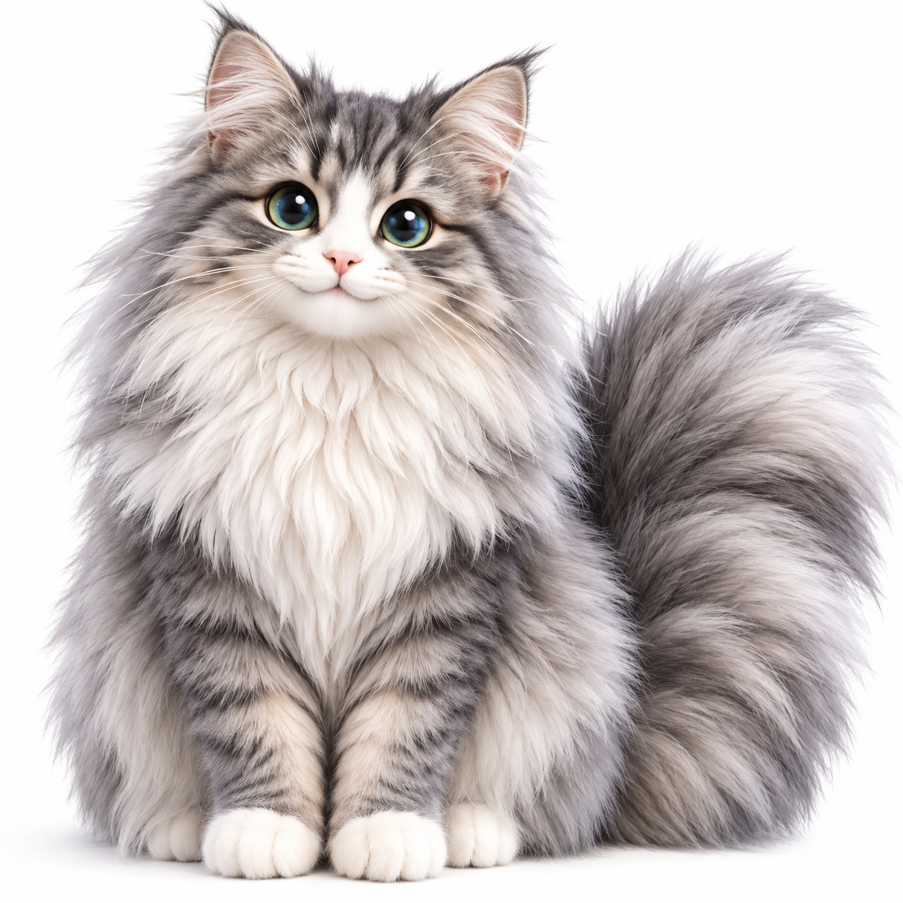

00:00
👂 聴いてるニャ
🧠 3.8残: 20/20
⚡ 3.5 lite
おやびん、ボクはみーちゅだニャ🐾 今日は何をお話しするニャ？

🟢
会話中（話しかけてニャ）
⚙️
🩺
🩺 みーちゅ システム診断モニタ
▲ タップで展開
[Init] システム起動。記憶帳・位置情報をロード完了ニャ！
⚙️ みーちゅの設定・記憶・ヘルプ
Google Gemini API Key:
📔 みーちゅの記憶帳（忘れない長期記憶）:
追加
会話のストック上限:
30往復
みーちゅの声色:
読み込み中ニャ…
声の高さ:
1.02
話すスピード:
1.05
💡 AIモデルの仕組み・制限・使い方ヘルプ
⚡ Flash 3.5 lite (通常時)
: 日常会話や天気、おすすめのお店などを超高速・省エネで即座に返信します。1日の制限はほぼ気にせず使えます。
🧠 Flash 3.8 (難問・指示時)
: 複雑な計算、論理問題、長文の比較分析、または「3.8で」と指定した時に自動起動します。上位モデルのため
【1日20回】
の上限を設けて安全に管理しています（毎日午前0時にリセット）。
📔 記憶帳の登録方法
: 音声で「みーちゅ、覚えて。誕生日〇月〇日」「記憶帳に登録して」と話しかけるか、この画面で自由に追加・削除ができます。
💬 会話ストック
: 時間が経っても消えません。設定した往復数を超えると古い会話から自然に押し出され、トークン消費の爆発を防ぎます。
設定と記憶を保存するニャ！